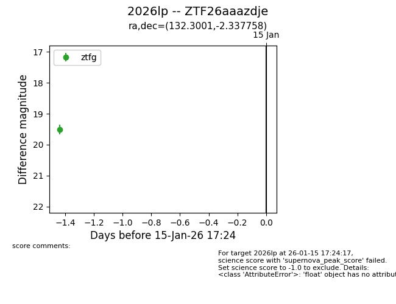
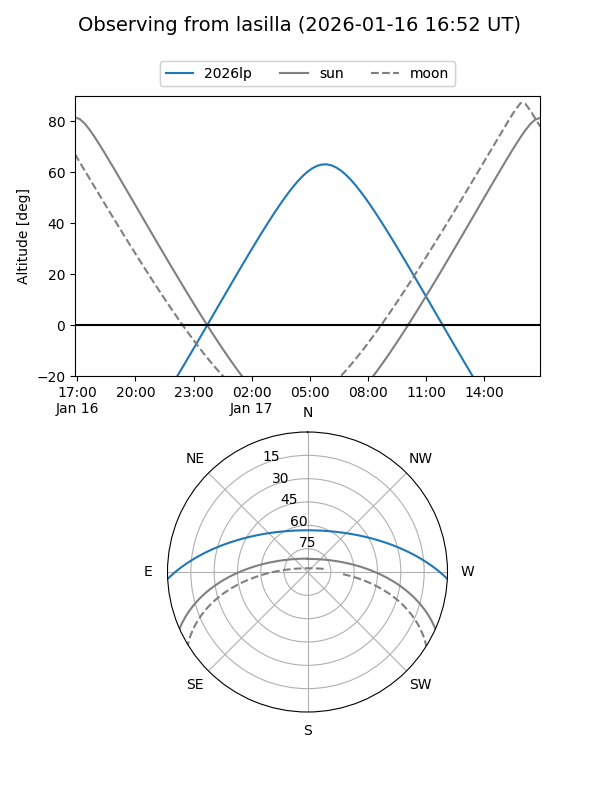
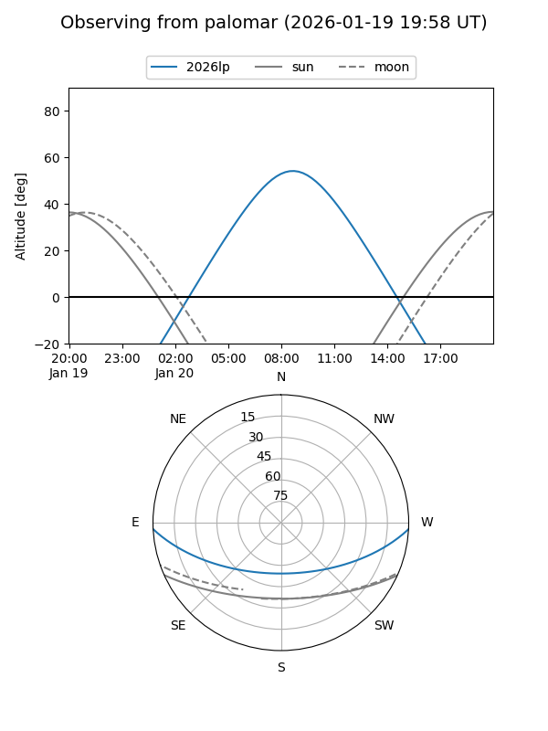
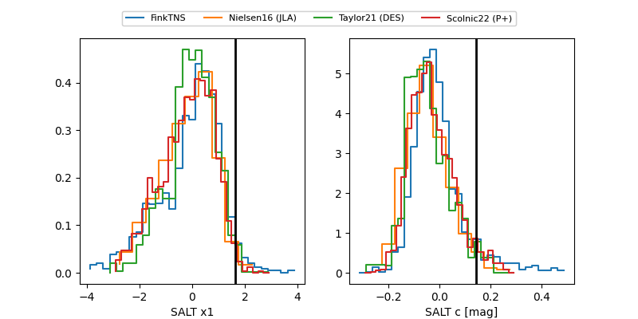

2026lp
Target 2026lp at 2026-01-26 02:36
Aliases and brokers:
FINK: link
Lasair: link
ALeRCE: link
TNS: link
YSE: link
alt names
ZTF26aaazdje (ztf,fink_ztf)
2026lp (tns,yse)
Coordinates:
equatorial (ra, dec) = 132.3001,-2.33776
equatorial (HMS+DMS) = 08:49:12.03,-02:20:15.93
galactic (l, b) = (229.5828,+24.73894)
Flags:
Photometry:
last ztfg=19.99, ztfr=19.99
3 ztfg, 3 ztfr detections
Lightcurve

Visibility


Additional plots
